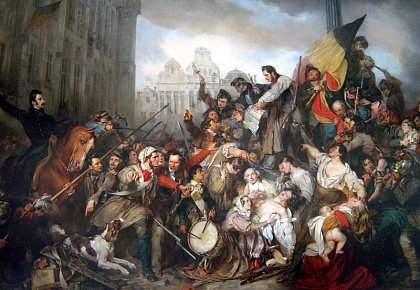

Исторически земли, принадлежащие сегодня королевству, всегда отождествлялись с нидерландскими территориями. Вплоть до революции 1830 года Бельгия была подмята под себя Голландией, которая свою очередь играла роль переходящего вымпела у более развитых держав. Пока родина Ван Гога и Вермеера переходила от Бургундского герцогства к Испании, а от Священной Римской империи – к Франции, вместе с ней кочевали и бельгийские провинции. Оторваться от более сильного соседа и провозгласить себя самостоятельной страной королевству удалось только в XIX столетии.
